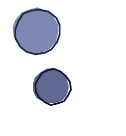
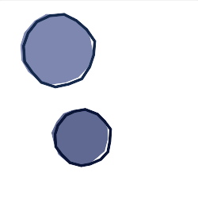

the preprocessor ppplt replaces the first line_to by a move_to
$ cat img-107a.xml | ./ppptr.opt - OFS0=0.110 | ./pppcs.opt - | ./ppptza.opt - | ./ppplt.opt - | ./xmgk.opt -
<msl> <image> <merge> <layer> <new w='250' h='270' rgb='255,255,255' /> <path coord='absolute' rgb='125,135,175'> <for_circle v='PT0' r='45' c='70,60' n='16' ofs='%[OFS0]'> <line_to p='_%[PT0]:-1+1:-1+1' /> </for_circle> <close_path /> </path> <path coord='absolute' rgb_stroke='20,40,75' stroke_width='2.8'> <for_circle v='PT0' r='45' c='74,62' n='16' ofs='%[OFS0]'> <line_to p='_%[PT0]:-1+1:-1+1' /> </for_circle> <close_path /> </path> </layer> <layer compose='multiply'> <new w='250' h='270' rgb='255,255,255' /> <path coord='absolute' rgb='95,105,145'> <for_circle v='PT0' r='35' c='100,170' n='16' ofs='%[OFS0]'> <line_to p='_%[PT0]:-1+1:-1+1' /> </for_circle> <close_path /> </path> <path coord='absolute' rgb_stroke='10,20,55' stroke_width='2.8'> <for_circle v='PT0' r='35' c='104,172' n='16' ofs='%[OFS0]'> <line_to p='_%[PT0]:-1+1:-1+1' /> </for_circle> <close_path /> </path> </layer> </merge> </image> <display /> <write filename='img-107.png' /> </msl>